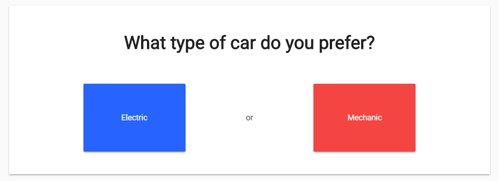
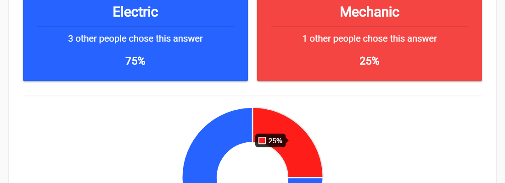
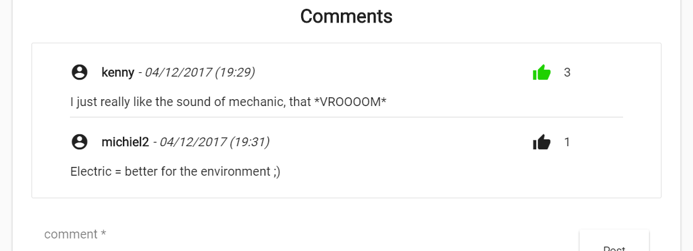

What is this? How does it work?
Surveymaster is a free site just made for fun. Ask questions and answer questions. Compare your answer to those of other users. Receive random questions submitted by our users, pick the red or blue answer.
View what other people answered on the surveys and compare yourself to the others.
Have any questions that you think about all the time? Maybe you wonder what people would think about it? Submit it to surveymaster and get answers!

Maybe you come across a questions that you want to say something more about. Show your opinion to to other users and comment on the surveys.
Answer and ask questions! Join surveymaster, it's 100% free!